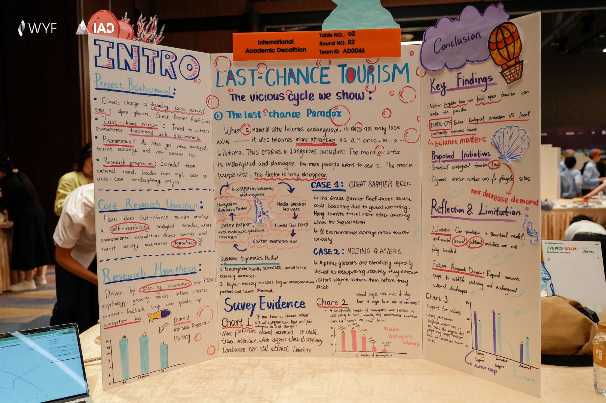

最后一次看见，是否让消失更快？
Last-Chance Tourism
这项研究关注“最后机会旅游”：当珊瑚礁、冰川等自然景观受到退化威胁时，人们可能更想在其消失前前往参观。团队以大堡礁和冰川为案例，结合反馈模型与问卷材料，探讨游客需求和环境退化如何相互影响，并讨论旅游管理中的保护与发展平衡。
研究背景
作品从气候变化对标志性自然景观的威胁切入，关注冰川消融、大堡礁珊瑚退化等现象。“最后机会旅游”指人们前往可能消失的环境旅行。团队注意到，景观受损未必只会降低吸引力，也可能激发“趁现在去看看”的需求；这为研究游客行为与环境退化的相互作用提供了起点。
How does last-chance tourism produce a self-reinforcing ecological paradox, where environmental degradation draws tourists and tourist activity accelerates degradation?
研究重点
团队尝试解释一条自我强化的关系：环境濒危引发关注和稀缺感，增加游客的到访意愿；更多游客活动又可能增加环境压力，加速景观退化。展板注明，研究从此前阶段的单一案例拓展到跨案例、跨学科分析。
研究分析：团队如何回答问题
提出假设：稀缺性与FOMO如何影响选择
团队以稀缺性和FOMO（害怕错过）作为行为解释，提出濒危景观可能因为“即将消失”而更具吸引力。这个假设把环境变化与游客心理连接起来，为后续分析确定方向。
建立模型：呈现相互强化的反馈回路
展板用回路图连接生态濒危、媒体关注、游客FOMO、游客增加和环境压力，展示团队所主张的逻辑闭环。模型帮助观众理解研究的整体关系；每个环节为何成立、如何作用，仍是需要进一步深入解释的重点。
结合案例：观察不同景观中的同一问题
作品使用大堡礁和消融冰川两个案例，讨论景观退化与旅游吸引力的关系。案例把模型中的抽象概念放入具体场景，也体现研究从单一案例向跨案例分析的拓展。
呈现调研：补充游客态度与政策支持
团队通过问卷图表呈现受访者对濒危景观的到访意愿、知晓环境影响后的选择以及对管理政策的支持。调研为游客心理和政策讨论补充材料，与模型和案例共同回应研究问题。
研究结论与讨论
团队形成了Findings、Solutions、Limitations的完整思路：完全禁止或完全开放旅游都难以简单解决问题，因为生态保护与当地经济收入之间存在取舍。作品以“Balance Matters”强调平衡，并提出生态旅游税、动态游客上限等思路；同时承认理论模型尚未充分纳入现实中的社会、政治变量。后续可进一步说明不同利益相关者如何共同推动更合理的平衡。
解读概览
整体来看，团队聚焦last-chance tourism，提出了具体且具有探究价值的研究问题：濒危环境吸引游客，而游客活动又可能进一步加速环境退化，这一机制如何形成？切入角度新颖。展板分区明确、标题清晰，研究背景、假设、分析、发现及反思与局限等板块层次清晰、内容明确；团队还使用数据图、案例和调研材料，从不同角度呈现研究。整体作品结构完整并体现团队思考，后续可以重点深化Research Analysis和Conclusion & Insight，让机制解释和研究洞见更充分地展示出来。
这个维度关注什么？
团队聚焦last-chance tourism，研究濒危环境吸引游客、游客活动又进一步加速环境退化的机制。问题对象明确，指向两者之间自我强化的关系，后续模型、案例与调研均围绕这一问题展开。
切入角度新颖，问题具体且具有探究价值。它没有停留在“旅游影响环境”的宽泛话题，而是追问一个值得解释的生态悖论，逻辑清晰且聚焦。
- 从具体观察中发现值得探究的问题。
- 把关注点推进到现象背后的关系与机制。
- 让模型、案例与调研共同回应研究问题。
这个维度关注什么？
团队使用数据图、案例、调研等材料，从不同角度分析研究问题；模型直观地呈现“濒危环境—游客需求—环境压力”的逻辑闭环，并以大堡礁、冰川等案例使问题具体化。
研究已经形成明确的机制分析意识，并结合多类材料展开。模型使观众能够把握整体逻辑，也为后续深入分析提供了框架。
这部分还可以更侧重于展示出来背后根因与作用过程的挖掘，如：为什么濒危环境会引发媒体大肆关注？媒体渲染如何推动游客的FOMO心理？哪类游客更容易受影响？游客增加后，生态压力具体来自碳排放、人为破坏、设施建设，还是其他因素？把这些问题与后续案例结合，能够让分析从逻辑关系的展示，进一步成为对现象的机制解释。
- 追问每个环节的why与how。
- 把机制解释放回具体案例中展开。
- 让案例说明关系如何发生，而不只是证明现象存在。
这个维度关注什么？
展板设置Background、Hypothesis、Analysis、Findings、Reflections and Limitations等板块。背景与研究设定、核心分析、研究发现和反思具有较清楚的分工，标题明确，整体信息层次较好。
观众能够较快看出研究从何出发、如何分析、形成什么发现，以及有哪些局限。有效的信息组织支持研究成果的展示与现场表达，因此该维度取得较好评价。
- 让每个板块承担明确作用。
- 用清晰标题形成研究过程的阅读线索。
- 既呈现发现，也保留反思与局限。
这个维度关注什么？
作品通过清楚的板块、标题和信息层级呈现研究，同时使用数据图、反馈模型、案例与调研材料辅助说明。整体视觉呈现较为清晰，能够支持观众理解研究内容。
视觉设计和信息组织总体有效，能够辅助研究成果展示和现场表达，因此Visual Design & Expression取得较好评价。导图也为复杂关系提供了直观入口。
- 让图表和模型对应正在解释的内容。
- 保持版块清楚、标题鲜明、层级稳定。
- 字号大小适中，帮助观众快速阅读展板。
这个维度关注什么？
团队已形成较完整的Findings、Solutions、Limitations思路，并提出trade-off，意识到生态保护与当地经济收入之间存在矛盾。作品用“Balance Matters”强调平衡，说明团队理解问题由多种因素造成，不能由单一方案简单解决。
能够识别取舍并承认局限，是有价值的思考方向。结论不只是重复问题，还尝试提出解决思路，展现了团队自身的判断。
可以进一步讨论政府、媒体、环保组织和游客各自能够发挥什么作用，以及如何共同实现经济收益、生态保护和游客需求之间更合理的平衡。这样能够更有力地支撑“Balance Matters”与解决方案，使已有内容中的Insight充分呈现出来。
- 从不同利益相关者的角度分析问题。
- 解释经济收益、生态保护与游客需求如何平衡。
- 让“Balance Matters”和解决方案得到具体论证。